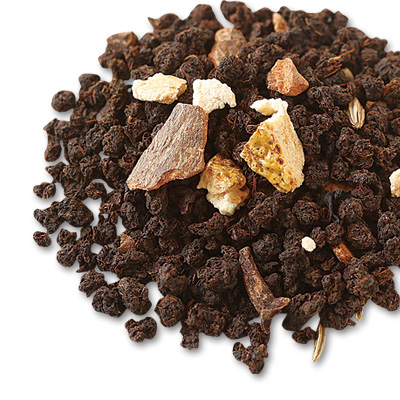
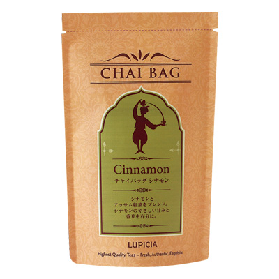

LUPICIA 5853 · g13335853
짜이 백 시나몬
チャイバッグ シナモン
밀크티 추천


レンジで手軽に作れるチャイバッグ
「ルピシア・マサラ シナモン」にアッサム紅茶をブレンド。シナモンの甘い香りと味わいを存分に堪能できます。
※ベースの茶葉には、CTC製法によるアッサム紅茶を使用しています。スパイスが引き立つ、コクのある茶葉を選びました。
電子レンジで簡単においしいマサラチャイがお楽しみいただけるチャイバッグが10個入パックになりました。ほっとひと息つきたい時のお供にどうぞ。
※パッケージ表面にお茶説、裏側にチャイの作り方を掲載しています。
【デザインコメント】
スパイスの種類によって動きが違う、チャイを注いでいるお茶目な人たちがポイントです。
- 상품번호
- 5853
- 상품 형태
- 티백 10개入
- 가격
- 750円
- 판매 안내
- ※상미기한：제조일로부터1년
- 원재료
- 紅茶、シナモン、ダイダイ果皮、クローブ、フェンネル※商品の改定などにより、商品パッケージの記載内容が上記内容と一部異なる場合がございます。
- 원산지
- インド※商品の改定などにより、商品パッケージの記載内容が上記内容と一部異なる場合がございます。
- 물
- 熱湯
- 우림 시간
- 1-2分
다른 포장
보관된 상품 정보 갱신일: 2026-10-22